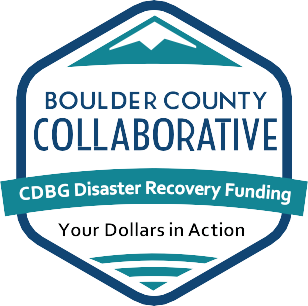

STEP 1: FORM A COLLABORATIVE PLANNING TEAM
Objective
Form a collaborative planning team to lead the development of a community resilience plan that will be informed and
supported by key decision-makers, community leaders, and stakeholders across the public, non-profit, and private
sectors.
Key Take-Aways
A diverse and representative planning team is an important factor for a robust and successful community resilience plan
- The resilience team representatives should reflect the community's composition, culture, and range of
planning
topics.
- Community engagement and buy-in are vital to success, including input from diverse and under-represented
groups.
- Teams should include stakeholders across the public, non-profit, and private sectors, such as: government,
utilities, businesses, schools, hospitals, and other key organizations and service providers.
Actions to Accomplish
PARTNERING FOR SUCCESS
Local government is the logical convener of community resilience planning initiatives, although stakeholders and
champions may come from other non-governmental organizations or regional government groups. The most effective
resilience planning efforts are championed by a collaborative planning team that provides leadership throughout
the
process and engages stakeholders and the broader community.
There are many ways to design and operate a planning team. Team representatives should reflect the composition,
culture, and range of planning topics in their communities, including recent, ongoing, or planned initiatives
that
relate to resilience.
The planning team should consist of local representatives who understand the value of community resilience
planning,
are committed to the process, and are able to champion resilience and engage the relevant stakeholders.
Beyond the planning team, public and private owners and operators of buildings and infrastructure systems,
leaders of
organizations, and community members should be aware of the resilience planning effort. They may be involved as
advisors or help with specific tasks.
COLLABORATIVE PLANNING TEAMS: DIVERSE APPROACHES
|
|
- Fort Collins and Larimer County (CO) collaborated to implement the first four steps in the NIST
Guide as part of the Department of Homeland Security (DHS) Regional Resilience Assessment
Program
(RRAP), with support from Idaho National Laboratory. A collaborative planning team was led by an
Emergency Management Coordinator from Larimer County and supported by the Emergency Management
Director of Fort Collins. Team members included representatives from the Fort Collins Department
of
Planning, Development, and Transportation, Fort Collins Utilities - Water and Power & Light,
and
the Fort Collins Office of Social Sustainability. The effort engaged community stakeholders from
four Social Functions identified in the NIST Guide (education, health, government, and
non-governmental organizations providing shelter) and four Utility Groups (water, wastewater,
power,
communications).
|
|

|
- The Boulder County Collaborative (CO) began its work as part of a coalition of
eight local governments in response to planned funding from the U.S. Department of Housing and
Urban
Development to the most pressing housing and infrastructure needs in the state. Using the NIST
Guide
process, the BCC held a series of workshops from November 2015 through March 2016 with a broad
group
of stakeholders, with focus groups that included regional utility and service providers. A
training
workshop also was conducted. The resulting standard draws on and complements the Colorado
Resilience
Framework that already had been published. The project's Collaborative Planning Team was led by
the
City of Longmont and included representatives from the Boulder County Collaborative's
participating
governments, utility service providers, the State of Colorado, HUD, local emergency response
organizations, neighborhood resource associations, and interested community members.
|
|
|
- For its Resilient Nashua (NH) initiative, led by the city's Office of Emergency
Management, Nashua established a diverse Collaborative Planning Team, described by the project
lead
as "interested citizens to the city engineer, the soup kitchen to the Country Club." Nashua
complemented the planning team with a steering committee and met with existing community groups
and
individuals in workshops as well as one-on-one sessions to ensure solid input and two-way
communications. The effort was initiated with scoping meetings held with city departments.
|

Useful NIST Resources
GB 14 - Forming a Collaborative Planning Team and Engaging the Community: https://www.nist.gov/publications/guide-brief-14-forming-collaborative-planning-team-and-engaging-community
Playbook tables and templates: https://www.nist.gov/el/communityresilience/community-resilience-planning-guide-playbook-templates-additional-resources